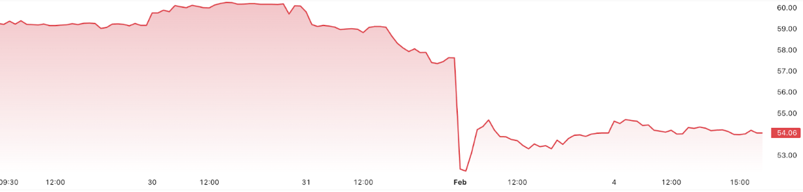
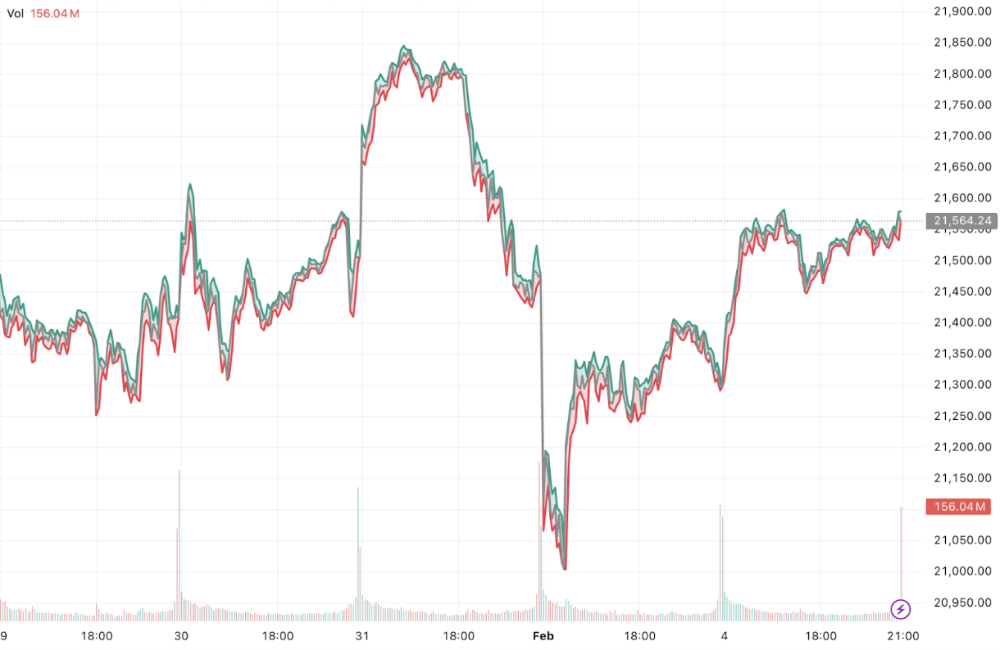
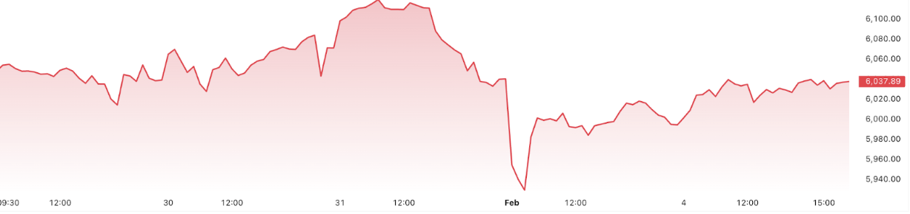

Trade wars have commonly been a tool for economic leverage, but when the U.S. President Donald Trump imposed sweeping tariffs on Canadian imports, the impact was felt across multiple industries. These tariffs, originally introduced in 2018 and revisited in 2025, aimed to boost U.S. domestic production but instead triggered retaliatory measures from Canada, sending shockwaves through industries like automobiles, natural resources, agriculture, and consumer goods.
How have some Canadian industries been affected?
In early 2025, President Donald Trump imposed significant tariffs on Canadian imports, including a 25% tariff on general goods and a 10% tariff specifically targeting energy products. These measures have had profound implications for key Canadian industries and the stock market.
The energy sector faces substantial challenges due to the 10% tariff on Canadian energy exports to the U.S., a critical market for Canada's oil industry. Despite this, analysts suggest that the mutual dependence between Canadian oil producers and U.S. refineries may mitigate some negative impacts. Companies like Suncor Energy and Imperial Oil, which have significant domestic refining operations, might be less vulnerable to these tariffs.
The automotive industry, however, characterized by deeply integrated supply chains between Canada and the U.S., is experiencing disruptions. The 25% tariff threatens the seamless flow of automotive parts and vehicles across the border, potentially leading to increased production costs and delays. This situation has caused stock volatility for auto-parts manufacturers such as Magna International (Figure 1.1), as well as other major Canadian manufacturers.
Figure 1.1 Magna International Inc. (MG.TO) - 5 Day Stock Price as of February 4, 2025
Source: TradingView
Beyond the heavily impacted energy and automotive industries, Trump’s 2025 tariffs have sent shockwaves through other key sectors of the Canadian economy, contributing to broader market declines reflected in the NASDAQ (Figure 1.2) and S&P 500 (Figure 1.3) downturns. The forestry sector has been hit hard, with renewed U.S. duties on softwood lumber driving down exports and cutting into the stock prices of major players like West Fraser Timber and Canfor. The agriculture industry is also feeling the strain, as a 25% tariff on Canadian grain, dairy, and meat exports has led to reduced demand and financial pressure on farmers. Meanwhile, technology and electronics companies are dealing with higher production costs due to supply chain disruptions, adding to price volatility. Even financial services have been affected, as investors react to economic uncertainty with increased caution, leading to market-wide losses. The combined impact of these tariffs has not only weakened Canadian industries but also contributed to a bearish sentiment across North American markets, fueling the downward trends seen in the NASDAQ and S&P 500.
Figure 1.2 NASDAQ 100 Index - 5 Day Stock Price as of February 4, 2025
Source: TradeView
Figure 1.3 S&P 500 - 5 Day Stock Price as of February 4, 2025
Source: TradeView
Long Term Effects and Adaptations
While Trump’s 2025 tariffs created immediate disruptions, their long-term impact on Canada’s economy will depend on how industries adapt. Initially, market uncertainty surged, but Trump’s decision to postpone tariffs on Canada and Mexico by one month provided temporary relief, allowing businesses to adjust their supply chains and explore alternative trade strategies. Despite this delay, companies in manufacturing and technology have accelerated supply chain diversification, seeking trade partners outside the U.S. to reduce reliance on American markets. The energy sector, facing a 10% tariff on exports, has prioritized expanding shipments to Asia and Europe, with firms like Enbridge and TC Energy investing in new infrastructure to tap into global demand. Similarly, agriculture and forestry industries have turned to China and the European Union to offset losses from decreased U.S. trade.
Financial markets remain volatile, with investors shifting toward defensive sectors as concerns over trade policies weigh on economic growth. The NASDAQ and S&P 500 have experienced declines as uncertainty dampens investor confidence. In response, the Bank of Canada may consider adjusting interest rates to support the economy, while policymakers explore new trade agreements to enhance global competitiveness.
Despite the temporary postponement, the specter of tariffs continues to shape Canada’s long-term trade outlook. If tariffs remain in place beyond 2025, businesses will need to further adapt, potentially reshaping Canada’s economic relationships and industrial landscape in the years ahead.
Conclusion
Trump’s 2025 tariffs have significantly impacted key Canadian industries, disrupting trade flows, increasing costs, and contributing to market volatility. While the one-month postponement of tariffs for Canada and Mexico offered businesses a brief window to adjust, long-term uncertainty remains. In response, industries have worked to diversify supply chains, explore new markets, and adapt investment strategies, though the broader economic effects continue to be felt. With the NASDAQ and S&P 500 reflecting investor concerns, the future of Canada-U.S. trade depends on evolving policies and how businesses continue to navigate the challenges ahead.
Glossary of Financial Terms
Tariffs: Taxes on imported goods, often used to protect domestic industries.
Energy Sector: Industry focused on oil, gas, and electricity production.
Automotive Industry: Sector that includes car manufacturers and suppliers, affected by tariffs on cross-border trade.
NASDAQ & S&P 500: Major U.S. stock market indices reflecting economic trends.
Supply Chain Disruptions: Interruptions in the production and delivery of goods due to trade policies.
Trade Diversification: Expanding trade beyond the U.S. to reduce dependence.
Market Volatility: Fluctuations in stock prices due to economic uncertainty.
Bank of Canada: Canada’s central bank, which influences economic stability through interest rates.
Published by: Faris Rashid